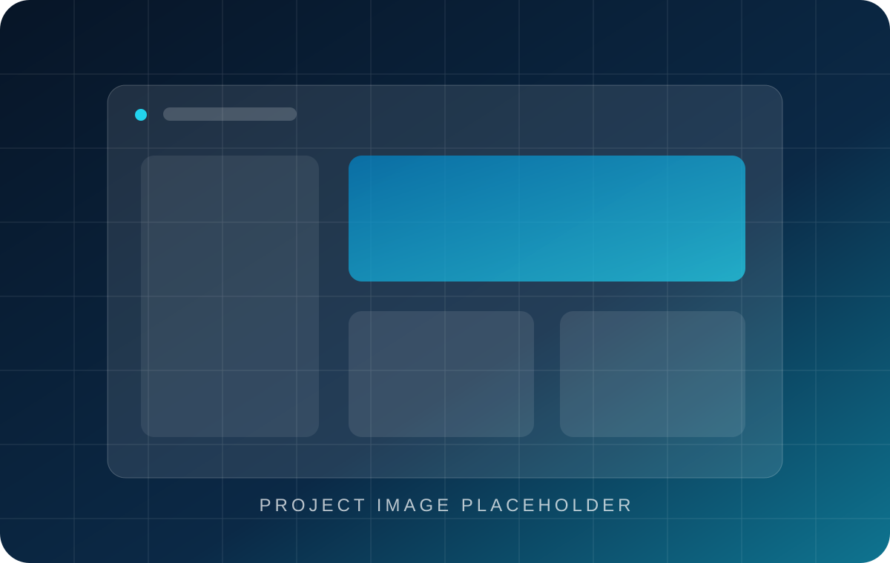

[PROJECT CATEGORY]
[PROJECT NAME]
[ONE-SENTENCE PROJECT SUMMARY]

Project Type
[PROJECT TYPE]
Industry
[INDUSTRY]
Our Contribution
[CONTRIBUTION]
Technology
[TECHNOLOGY]
Timeline
[IF KNOWN]
Team contribution: Built by members of the YusraSoftwares team. Replace this attribution with “YusraSoftwares Project” when applicable.
Overview
[Explain what the project is, who it serves, and why it was built.]
The Challenge
[Describe the real problem that existed and what the product needed to solve.]
Our Approach
[Describe the verified research, product, design, and engineering approach.]
Key Features
- [VERIFIED FEATURE]
- [VERIFIED FEATURE]
- [VERIFIED FEATURE]
Technical Implementation
Architecture
[Describe the relevant architecture and important tradeoffs.]
Frontend, backend, and data
[Include only technologies and implementation details actually used.]
Authentication, integrations, AI, and deployment
[Retain only the relevant subsections and add verified detail.]
Challenges & Solutions
[Explain a concrete technical or product problem and how it was solved.]
Results
[Describe concrete delivered outcomes. Add metrics only when verified.]